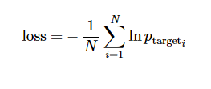
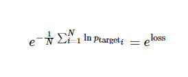

可以在 this great article 查看循环神经网络(RNN)以及 LSTM 的介绍。
此教程将展示如何在高难度的语言模型中训练循环神经网络。该问题的目标是获得一个能确定语句概率的概率模型。为了做到这一点，通过之前已经给出的词语来预测后面的词语。我们将使用 PTB(Penn Tree Bank) 数据集，这是一种常用来衡量模型的基准，同时它比较小而且训练起来相对快速。
语言模型是很多有趣难题的关键所在，比如语音识别，机器翻译，图像字幕等。它很有意思--可以参看 here。
本教程的目的是重现 Zaremba et al., 2014 的成果，他们在 PTB 数据集上得到了很棒的结果。
本教程使用的下面文件的目录是 models/rnn/ptb:
| 文件 | 作用 |
|---|---|
ptb_word_lm.py |
在 PTB 数据集上训练一个语言模型. |
reader.py |
读取数据集. |
本教程需要的数据在 data/ 路径下，来源于 Tomas Mikolov 网站上的 PTB 数据集http://www.fit.vutbr.cz/~imikolov/rnnlm/simple-examples.tgz。
该数据集已经预先处理过并且包含了全部的 10000 个不同的词语，其中包括语句结束标记符，以及标记稀有词语的特殊符号 (<unk>) 。我们在 reader.py 中转换所有的词语，让他们各自有唯一的整型标识符，便于神经网络处理。
模型的核心由一个 LSTM 单元组成，其可以在某时刻处理一个词语，以及计算语句可能的延续性的概率。网络的存储状态由一个零矢量初始化并在读取每一个词语后更新。而且，由于计算上的原因，我们将以 batch_size 为最小批量来处理数据。
基础的伪代码就像下面这样：
lstm = rnn_cell.BasicLSTMCell(lstm_size)
# 初始化 LSTM 存储状态.
state = tf.zeros([batch_size, lstm.state_size])
loss = 0.0
for current_batch_of_words in words_in_dataset:
# 每次处理一批词语后更新状态值.
output, state = lstm(current_batch_of_words, state)
# LSTM 输出可用于产生下一个词语的预测
logits = tf.matmul(output, softmax_w) + softmax_b
probabilities = tf.nn.softmax(logits)
loss += loss_function(probabilities, target_words)
为使学习过程易于处理，通常的做法是将反向传播的梯度在（按时间）展开的步骤上照一个固定长度(num_steps)截断。
通过在一次迭代中的每个时刻上提供长度为 num_steps 的输入和每次迭代完成之后反向传导，这会很容易实现。
一个简化版的用于计算图创建的截断反向传播代码：
# 一次给定的迭代中的输入占位符.
words = tf.placeholder(tf.int32, [batch_size, num_steps])
lstm = rnn_cell.BasicLSTMCell(lstm_size)
# 初始化 LSTM 存储状态.
initial_state = state = tf.zeros([batch_size, lstm.state_size])
for i in range(len(num_steps)):
# 每处理一批词语后更新状态值.
output, state = lstm(words[:, i], state)
# 其余的代码.
# ...
final_state = state
下面展现如何实现迭代整个数据集：
# 一个 numpy 数组，保存每一批词语之后的 LSTM 状态.
numpy_state = initial_state.eval()
total_loss = 0.0
for current_batch_of_words in words_in_dataset:
numpy_state, current_loss = session.run([final_state, loss],
# 通过上一次迭代结果初始化 LSTM 状态.
feed_dict={initial_state: numpy_state, words: current_batch_of_words})
total_loss += current_loss
在输入 LSTM 前，词语 ID 被嵌入到了一个密集的表示中(查看 矢量表示教程)。这种方式允许模型高效地表示词语，也便于写代码：
# embedding_matrix 张量的形状是： [vocabulary_size, embedding_size]
word_embeddings = tf.nn.embedding_lookup(embedding_matrix, word_ids)
嵌入的矩阵会被随机地初始化，模型会学会通过数据分辨不同词语的意思。
我们想使目标词语的平均负对数概率最小

实现起来并非很难，而且函数 sequence_loss_by_example 已经有了，可以直接使用。
论文中的典型衡量标准是每个词语的平均困惑度（perplexity），计算式为

同时我们会观察训练过程中的困惑度值（perplexity）。
要想给模型更强的表达能力，可以添加多层 LSTM 来处理数据。第一层的输出作为第二层的输入，以此类推。
类 MultiRNNCell 可以无缝的将其实现：
lstm = rnn_cell.BasicLSTMCell(lstm_size)
stacked_lstm = rnn_cell.MultiRNNCell([lstm] * number_of_layers)
initial_state = state = stacked_lstm.zero_state(batch_size, tf.float32)
for i in range(len(num_steps)):
# 每次处理一批词语后更新状态值.
output, state = stacked_lstm(words[:, i], state)
# 其余的代码.
# ...
final_state = state
首先需要构建库，在 CPU 上编译：
bazel build -c opt tensorflow/models/rnn/ptb:ptb_word_lm
如果你有一个强大的 GPU，可以运行：
bazel build -c opt --config=cuda tensorflow/models/rnn/ptb:ptb_word_lm
运行模型：
bazel-bin/tensorflow/models/rnn/ptb/ptb_word_lm \
--data_path=/tmp/simple-examples/data/ --alsologtostderr --model small
教程代码中有 3 个支持的模型配置参数："small"， "medium" 和 "large"。它们指的是 LSTM 的大小，以及用于训练的超参数集。
模型越大，得到的结果应该更好。在测试集中 small 模型应该可以达到低于 120 的困惑度（perplexity），large 模型则是低于 80，但它可能花费数小时来训练。
还有几个优化模型的技巧没有提到，包括：
继续学习和更改代码以进一步改善模型吧。
原文：Recurrent Neural Networks 翻译：Warln 校对：HongyangWang